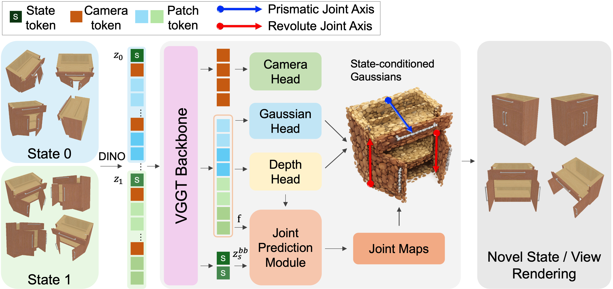
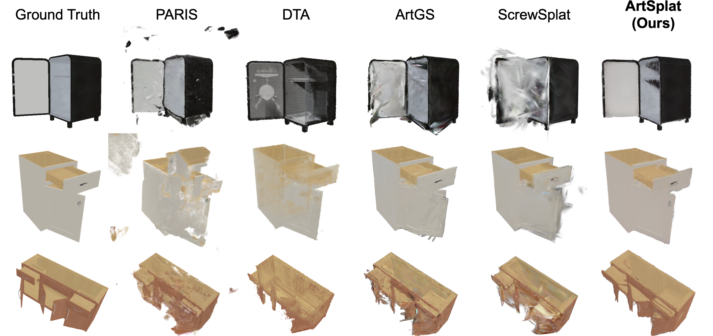

ArtSplat
Feed-Forward Articulated 3D Gaussian Splatting from Sparse Multi-State Uncalibrated Views
TL;DR
ArtSplat reconstructs both geometry and joint parameters of an articulated object from sparse, uncalibrated RGB views across multiple articulation states — in a single feed-forward pass, over 400× faster than per-object optimization baselines.
Method

ArtSplat predicts camera, depth, 3D Gaussians, and articulation in a single forward pass over two articulation states. Articulation is represented as a dense per-pixel joint map (11 channels: type, axis, pivot, angle, displacement), so the joint at each pixel directly drives the Gaussian primitive built on that pixel — making articulation end-to-end differentiable with geometry. A learnable state token per state, combined with a single Cross-State Attention block, lets each state's token attend to the patch tokens of the other state, capturing discrete inter-state motion. A dual-branch DPT head then decodes the joint map, splitting it into a 9-channel invariant group (type, axis, pivot) and a 2-channel variant group (angle, displacement).
Results

BibTeX
@article{lee2026artsplat,
title = {ArtSplat: Feed-Forward Articulated 3D Gaussian Splatting from Sparse Multi-State Uncalibrated Views},
author = {Lee, Inseo and Kim, Yoonji and Sohn, Eugene and Lee, Jiwoong and You, Jungmin and Lee, Joonseok and Kim, Jin-Hwa},
journal = {arXiv preprint arXiv:XXXX.XXXXX},
year = {2026}
}